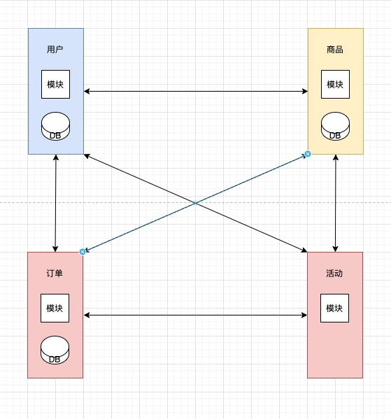
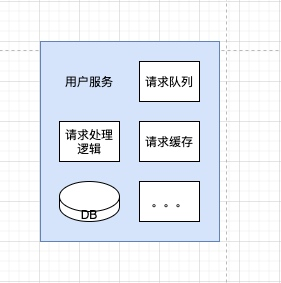
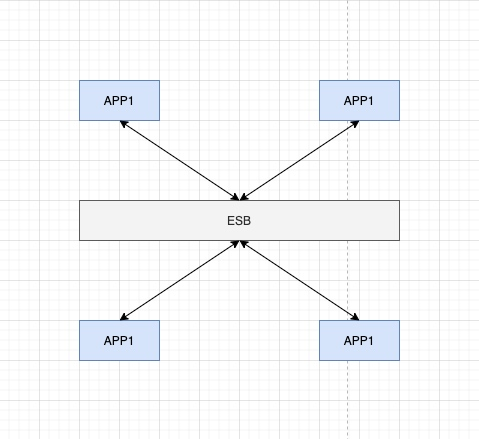
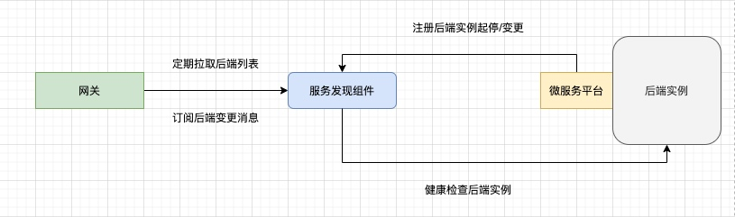

背景
尽管现在各种微服务架构，云原生体系横行，实践的经验和分享也可以经常从各类公众号上看到，但是这些对小型 IT 公司的帮助还是十分有限。为什么呢，我从 “往哪迁”，“怎么迁” 两方面分析：
- “往哪迁”：高级的架构往往是需要大量知识储备，小型 IT 公司更偏向于业务（特别是考虑如何把业务做大），很可能本身就处于 “技术债” 下，这时候就要问一问自己：1. 学习成本如何？2. 如果采坑，有能力填平吗？
- “怎么迁”：即使技术人员掌握了高级架构的知识，但是从老架构迁移到新架构本身就是一个问题。“迁移" 连接着过去的架构和未来的架构，需要同时考虑两边架构的影响，从而制定出平滑过渡的方案。另一方面，各家都有各家的难处，特别是小公司，老架构中可能夹带着五花八门的特殊性，这种客观现象导致我们很难从外界找到现成的方案。
任何公司的架构并非一开始就是如此，我们在分析当前时，也要结合过去，只有这样我们才能预测未来，甚至指定合适的架构升级方案。下面，我以当前在职的小公司为例，通过其业务发展，介绍我们常见的架构变迁。
初创期（单体架构）

一开始公司业务简单，可能就是一个 Web 网站，也可能就是一个功能单一的小程序。此时，没有人会想到架构，因为此时可能只有 1 台服务器就能把业务跑起来，而且人力运维成本也不大。
但是麻雀虽小，五脏俱全，唯一的后端服务中可以包含多个系统或，比如：用户系统，订单系统，商品系统等，但是现阶段只是一个雏形，
业务发展（垂直架构和模块化）
渐渐业务上开始提供各种各种的新功能，各种新功能也开始有了分类，随着 “类聚”，各个模块在这个时候慢慢有了雏形。但我们需要注意的是，这里所谓的 “模块” 还是以代码的形式集中在一个服务中，如下图，

这时候，在公司里，各个模块可能都有了对应的负责人，功能迭代渐渐有了分工，单一模块的开发效率得到的提升。但是，技术上也遇到了新的问题：
- 后端越来越厚重，开发和维护的成本快速上升。
- 模块与模块之间合作的同时，也带来碰撞（比如说强占系统资源，竞争内存资源）。
- 故障排查越来越复杂：一个模块的崩溃很可能是结果，而不是原因。
开个玩笑，此时有个负责 “订单” 的开发者饱受上述困扰后，决定从 “ALL in ONE” 的模式中脱离出来，但是 “订单” 模块也依赖其他模块的数据库数据或者接口。他很可能也不会愿意重复开发这些接口，而宁愿同时把依赖的模块也脱离出来。渐渐的就变成了下图：

简单解释下，用户和商品模块最基础的，之后订单模块脱离了出来，但是订单同时需要用户和商品的数据，因此订单模块需要访问用户和商品对应的数据库。同理，优惠券模块也依赖用户和商品模块对应的数据库。
另一方面，某些基础模块往往被其他所依赖，比如说用户模块。
这种模块的分离带来的好处十分明显，各个模块的开发相对的独立了，单个模块受其他模块的影响大大降低（开发，运维等多个方面）。但是仍然有弊端：
- 重复开发：比如说用户模块，被多个服务依赖，一旦代码更新，导致多个服务需要更新。
- 技术栈的限制：比如说开发订单模块时，因为依赖用户模块，很可能被迫使用和用户模块相同的技术栈。
- 数据库的压力：比如说用户模块的数据被越来越多的模块引用，随之用户信息的数据库压力也随之增加。
- 性能的瓶颈：根据木桶原理，这种服务的评价取决于其中短板模块的瓶颈。
SOA 架构
经济学鼻祖亚当斯密曾提出过 “分工带来高效”。而我认为 SOA 则与该观点有点 “不谋而合”。
SOA 全称是: Service Oriented Architecture，中文释义为 “面向服务的架构”，即服务得到完全的独立。
这个独立是多维度的：
- 技术栈的独立
- 部署形式的独立
- 性能/瓶颈的独立
- 数据库表的独立，甚至整个数据库的独立
- 甚至占用资源（CPU，内存，网络等）的独立
SOA 的雏形

“分工带来高效“ 在这里意味着服务的划分，由此带来诸多便利：
- 没有技术栈的限制。
- 故障快速定位。
- 释放创新力：各个服务不受其他服务的限制，独立开发更多的功能，力求技术上的成长。
创新力
其实，我在这里重点提下上述第三点：释放创新力。我再以用户服务为例，在之前因为用户服务没有完全独立（比如说，用户的数据库直接被其他服务访问），因此当该数据库达到瓶颈的时候，作为用户服务的负责人其实也很难有所建树。而现在，所有对用户数据的访问都约束在用户服务的接口处，此时用户服务的开发者就有很多的发挥空间了，比如说在服务内部做一个接口缓存。

上述只是拿数据库作为一种约束举例，实际情况下问题会更复杂。但是我想表达的意思是：只有解放了枷锁，服务本身才能成长，壮大，成为一个能在互联网大浪潮中经得起考验的服务。
SOA（伪）
这里我结合自己的亲身经历，举一个真实的反面案例。
我之前来到了一家以 WebService 为主的小型技术公司，成立了近 10 年。我通过下图来大致描述下这家公司的 SOA 架构。

该公司不少模块依赖的数据都集中在一个数据库中，虽然后来也经历了上述提到的困扰，最终决定将模块的逻辑代码独立出来，而数据库数据并没有。至于为什么，我事后认为，一般代码的逻辑拆分相对容易，且过渡方式也简单，但是数据库的拆分就要麻烦一点，风险也高一点，更主要的是多年以前拆分数据库还是个挑战。
我们客观评价下这种架构，
优点：
- 实现里服务的部分独立：至少在代码逻辑，部署形式和技术栈
- 减少了服务间的相互调用：原本想访问某服务的数据，直接访问数据库即可。
- 故障排查更快：因为服务间交互减少了。
- 致命：整个架构被中心的数据资源牢牢绑死。
该架构在请求规模小的情况下，是高性价比的，快速能够享受到 1-3 点的优势。但是规模一大，整个架构的性能瓶颈就立马凸显出来：所有服务都受到数据库的瓶颈。
期间：
- 各服务中存在着大量重复的代码：比如说用户的会员等级问题，用户数据库信息中保存着所有用户的会员等级（免费，高级，钻石，旗舰等）。同时，也存在一个档位的概念，比如说有的商品只能由免费级别以上的用户才能购买，有的折扣只能由高级级别以上的用户才能享受。那么根据会员等级计算档位的代码逻辑就出现在商品，订单，优惠券服务中。
- 数据库结构大量冗余：接着上面的例子，用户的档位计算方式是可能变化的，一旦变了，那么商品，订单，优惠券服务里对应的代码逻辑都需要修改，这是这些开发者不情愿的。因此，他们一合计，要求用户服务在用户（数据对应的）数据结构中额外添加了 “档位” 字段。
- 数据库的数据管理不明确：之前说到 “分工带来高效“，而这里的数据就不那么容易管理。
- 有可能两张表的数据字段 80% 是相同的，甚至完全重复。
- 有可能商品服务创建了一张表，但是之后废弃了，但是商品服务不确定别的服务是否还依赖着这张表，久而久之，就不了了之。
- 数据表的管理不够明确，进一步导致索引的管理模糊。比如说同一张表中的多个索引可能是依照不同服务的要求加上的。
最为可怕的是，小公司的发展是缓慢的，这些问题就像 “温水” 一样，慢慢煮着整个服务体系这只 “青蛙”。等到一个契机，一个巧合，这个问题就会彻底暴露出来，而这时候回过头来再去看这个数据库，那亦然变成了 “黑洞”。
难免会问：出路在哪？
说实话，我亲身经历后，直接望而生畏。害怕的不是没有方案，方案其实很容易想到，无外乎:
- 拆解数据库，所有数据由各自服务负责。
- 杜绝数据所有者之外的服务直接访问数据，转换为调用接口的形式。
- 必要时引入新的数据管理组件。
这个方案的实际过程是十分痛苦的，相当于要把过去多年的开发从头重新整理一遍，这项浩大的工程，可能会持续 2-3 年时间。甚至觉得如果重构一遍，可能花费的时间能短一些。但是无论哪种方式，都需要得到大多数技术开发的认同，没有一个开发人员能避开，这是一件集体工程。
这时候又不得不回到开头 “这是一家小公司”，小公司意味着行业间高强度竞争，业务开发优先，人员流动不可控，技术人员水平参差不齐。在我的认识里，开发一个新的业务接口并不难，特别是有雷同的接口可以参考，可能一个应届生就能依样画葫芦，但是这种架构的变迁，就要求开发人员对该业务服务有彻底的熟悉，制定出兼容/过渡方案，然后强依赖自身经验优化接口设计，这很可能是应届生不具备的。而对满足条件的 “老司机” 而言，此次架构的调整，某种意义上是推翻他们过去的思维模式，与应届生一起，重新回到技术的起点，去认识，去了解什么是架构。
否定自己，正视自己，才能突然自己，但其中的勇气和决心却常常被人忽视。
SOA 成熟（一）
随着 SOA 架构中的服务越来越多，最后难免沦落成下面的样子。

上图就是一个简单的 SOA 架构下的服务关系图，但实际上省略了其中很重要的一部分：服务发现。
服务发现，简单描述就是 APP1 如何知道 APP2 的访问地址。有人说，把 APP2 的服务地址写到 APP1 的配置里，那么如果 APP2 如果扩缩容了呢。这个问题我们在后面再说，这里我们简单地假设通过 WebService 的域名来解决。
还有哪些新问题呢?
- 访问权限：如何限制 A 服务访问 B 服务呢？如果把访问权限设置在 B 服务中，那么最终所有的访问权限都会分散在各个服务中，如果想要一个权限概览，就十分繁琐。
- 访问控制：如果限制某些接口的被访问量，如何设置拒绝某些接口的访问，这类问题同上。
- 接口数据格式：不同服务方返回数据格式不统一，导致接收方无奈要兼容多种数据格式或协议。
随着有产生了 ESB （总线）模式。
SOA 成熟（二）
这里我们介绍下 ESB 模式。

服务与服务交互之间，引入 ESB 层，作为服务与服务通信的桥梁。那么这个桥梁需要满足：
- 路由转发。
- 接口数据格式的转换。
- 中心化控制。
这些都比较容易理解，有了中心化的控制，我们就可以从全局的角度是俯瞰整个服务关系。
微服务
微服务为什么会产生？我觉得这个问题不能局限在讨论架构的范围内去回答，需要结合周围的生态环境，就像短视频的兴起，逃不开 4G/5G 网络的普及。这里我不得不描述下微服务产生的背景。
- docker（容器技术）：服务的精简，良好的隔离，运行环境一致性，多平台支持，快速的起停。
- Kubernetes（容器编排技术）：物理机资源池化，自动化运维，可编程式运维。
- 技术越来越成熟，支持让开发者专注于自身业务逻辑。
互联网的发展，让开发者越来越专注，专注到只需要关注自身的业务开发，交付出一个 docker image 即可（甚至一个 Dockerfile 即可，image 的构建也可以找平台支持），接下来，服务的部署，运维，灰度升级，网关上注册服务都能通过平台来完成。
在这样的大环境下，微服务架构就诞生了。相比之前的 SOA 架构，有人说是一种升级版，这里，我也不去比较两者的优劣。我认为微服务的诞生，是因为它能更充分地利用当前的互联网技术，可以说是大环境条件下应运而生的。
有句古话：“分久必合，合久必分”。从一开始的单体服务到服务独立的 SOA 架构，都是 “合久必分” 的过程。而到了微服务架构，虽然服务越来越简单，越来越零碎，但是所有服务都被一个平台或者服务管理系统有效地管理了起来，更给人一种 “分久必合” 的感觉。
微服务架构的组成
微服务架构，试着把服务作为一种资源进行管理。接下来我们从各个方面触发，阐述如何管理 “服务”。
网关
大量的服务，夹带着大量的接口，这些服务与接口的调用关系很有可能会错综复杂。因此，我们引入了网关。
网关：在调用者和被调用者中增加的一层把关的门槛，所有进入到微服务的请求都先通过网关。但是网关也是分粒度的。
| 粒度规模 | 描述 | 实现难度 |
|---|---|---|
| 最粗粒度 | 整个微服务共享一个网关，请求（来自外部，内部）都通过网关转发 | 简单 |
| 最细粒度 | 每个微服务实例独享一个网关，请求（来自外度，内部）都通过网关转发 | 困难 |
| 适中 | 整个微服务分成几个区，每个区对应一个网关 | 适中 |
最细粒度的方案有兴趣的可以调研：ServiceMesh 和 istio。下面我们对粗粒度的网关做一个简介。

服务发现
网关收到请求，是如何将请求转发到期望的后端实例的，网关又是怎么知道后端实例的存在？这时就不得不提到 “服务发现”，紧接着还包括服务注册。
服务发现通常是一个组件，例如 zk，ETCD，consul 等，主要具备三个功能：
- 服务注册：接受后端实例的登记请求。
- 服务发现：为网关提供后端实例的列表。
- 服务健康检查：判断后端实例是否健康。

但这些已经满足不了当前互联网高速发展所产生的要求，一个微服务的网关，还要具备熔断，降级，限流的等功能，避免某个服务的异常，导致整个微服务架构的雪崩。
日志收集、监控收集
业务服务本身除了依赖自己的逻辑代码之外，还会有一些通用的需求，最常见的就是日志和监控。但是如果每个服务都自己实现，那么：
- 违背了专业人做专业事的原则，业务服务开发者不一定擅长日志和监控收集。
- 不同的服务产生不同的日志和监控收集方式，作为微服务平台而言，很多时候也需要感知他们的存在，那么也会产生兼容这些收集方式的问题。
- 容器化的条件下，不恰当的写日志方式，可能会导致容器异常（磁盘过渡使用）。
那么结果就是，微服务平台统一地处理日志和监控收集。日志和监控是服务运行状态的反馈，在这个基础上，我们有了进一步优化整个平台稳定的可能性。
完善服务的健康检查：通过日志中的信息，更准确地判断后端实例的运行状态（比如说 Java 的 panic 日志），那么我们及时将该实例标记为不健康状态或者去重启。
完善网关的转发策略：通过业务的监控数据，更准确地判断后端实例的运行状态，比如后端实例处理请求的时延越来越高，那么该实例可能处于请求积压的情况，那么网关可以考虑将该实例的权重调低。
容器编排
推荐容器编排框架 Kubernetes。当前 Kubernetes 已经成为容器编排的主流，各大云厂商都会提供。选择云厂商，减少了我们对 Kubernetes 集群的运维成本，但是不代表我们就可以不去学习 Kubernetes。
我现在就在小公司做容器化迁移的工作，原厂商选择的是阿里云，但是适配过程中，发现对开发者还是有不低的要求，比如说：
- deployment 升级时，pod 的删减与网关数据不同步，存在时间差如何解决？
- 如何让后端实例获取请求源 IP？
- 后端实例日志如何收集？
- 服务监控打点如何和平台连接？
- 等等。
微服务架构的评价
微服务架构是适应技术发展的产物，但是我其实是不推荐小型 IT 公司选择的。
- 小型 IT 公司本身服务没有那么多和零碎，如果是的话，应该反思是不是在规划服务的时候存在不妥。
- 微服务架构对知识的要求是最高的，强行适配可能会出现东施效颦的结果。参考 SpringCloud 全家桶，现在已经被广泛使用，我也不认为那些使用者都牢牢地掌握了，但是由于被社会充分地验证和总结，这套框架的门槛已经大大降低。
传统的微服务架构缺点：
- 应用被分成多个微服务，故障定位复杂度提高。
- 单个服务故障，可能会引起其他服务异常，可能触发雪崩。
- 服务数量大大增加，管理和运维的成本转移到微服务架构的维护者身上。
然而这些都是可以克服的，我认为微服务架构存在的最大问题是学习成本。就像交通工具，自行车，汽车，高铁和飞机，效率越高，约高级的往往学习成本就越高。微服务架构本身的复杂性，被迫要求开发人员的高素质，只有人的自身素质过硬，在驾驶这种高级 “交通工具” 的时候，才显得不那么费劲。
可能再过几年，某天一套微服务版本的 “SpringCloud” 全家桶横空出现，到了那个时候，我相信中小型公司约会跃跃欲试。
总结
给中小型 IT 公司在构架选择时的几点建议：
- 以 Kubernetes 为基础，有效避免物理机宕机造成的损失。
- 选择 SOA 架构，使服务与服务之间充分解耦，整个系统的分工更加明确，各个服务独立发展壮大。
- 选择云厂商。因为云厂商可以提供基础的和可靠的互联网服务，比如说日志收集，监控采集和报警，负载均衡等。
- 选择比努力更重要，多多参考大公司验证过的方案，避免自己拍脑袋想方案。因为小公司能遇到的问题，很可能已经被其他公司解决，没必要再重新去采坑，甚至不要妄想自己能找到比大公司更好的解决方案。
- 合理运用技术工具。一群应届生基于 SpringCloud 的开发成本，可能要比一群 PHP 老司机低且更可靠。